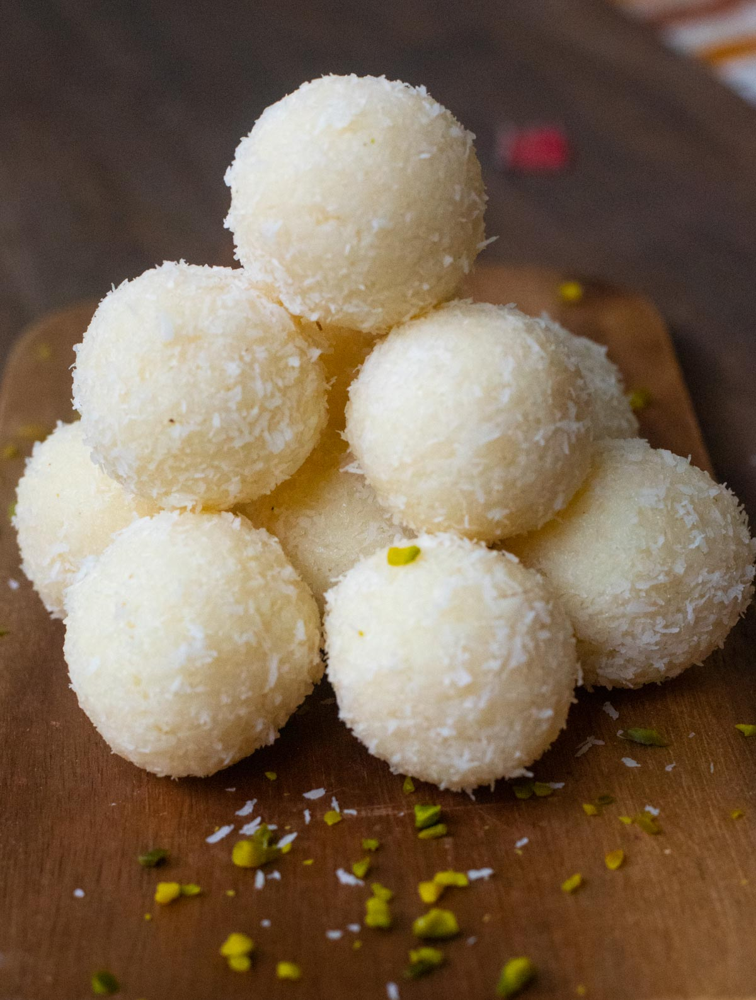

Coconut Laddoo

Description
Coconut laddoo is a traditional Diwali sweet which can be prepared easily at home in just 10 minutes. This instant laddoo sweet can be prepared in advance hence it’s the perfect to serve in the parties or potlucks and also a good option to serve as an afterschool snack to kids. You will need only coconut, condensed milk, ghee and cardamom powder to make this laddoo.
Traditionally coconut laddoos were made with fresh grated coconut and jaggery as it was the most common sweetener used in traditonal Indian cooking.
Ingredients
- 1½ cups + 1/4 cup Desiccated Coconut (grated dry coconut) or Fresh grated Coconut
- 3/4 cup Condensed Milk
- 1 teaspoon Ghee (clarified butter)
- A Pinch of Cardamom Powder
Steps
- Keep all the ingredients ready.
- Heat 1 teaspoon ghee in a nonstick pan or a heavy based pan/kadai over medium flame.
- Add 1½ cups desiccated coconut (dry grated coconut) and mix well.
- Stir continuously and roast the coconut for 2-3 minutes over medium flame. Add 3/4 cup condensed milk.
- Mix well. Stir and cook until the coconut and condensed milk mixed properly.
- Stir and cook until the mixture turns thick, starts to leave the sides and forms into a big lump. It will take 4-5 minutes over low medium flame. Add 1/4 teaspoon cardamom powder.
- Mix well. Turn off the flame and let the mixture cools down for a while for around 5-10 minutes.
- Take 1/4 cup desiccated coconut (dry grated coconut) in a small plate. When the mixture is little warm, take a small lemon sized portion from the mixture and give it the shape like ball.
- Roll that ball into the desiccated coconut until it coats well from all the sides.
- Transfer it to a plate. Make all the laddus in a similar way. Coconut laddus are ready for serving. Store coconut ladoo in an airtight container and keep it in the refrigerator. They stay good for a week.
References
- Description
- Recipe